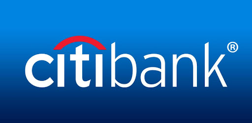

Citi Summer Internship
Fortunately, my sixth form had offered me a programme called Career Ready, it offered occasional masterclasses, provided me with a mentor, and gave me a chance to obtain a paid internship during the Summer. To me it was oblivious that I had to apply to this. Fast forward to the present, here I am working at Citi bank a huge investment bank known worldwide. First day I was introduced to the other interns and was given a rundown to the type of work we would be doing. Luckily I was placed in ICM in the department of In_business Quality Assurance where I met some really welcoming people. The supervisor who I am thankful for, was very kind and considerate as she some days she let me go home early some days due to the fact I had completed all my work. During this internship multiple meetings were held in person and virtually and it really gave me insight into the finance industry. Additionally, due to my supervisor hearing about my interest of tech she requested for python to setup on my system so that I could further develop my python skills and see how its applicable in their line of work.